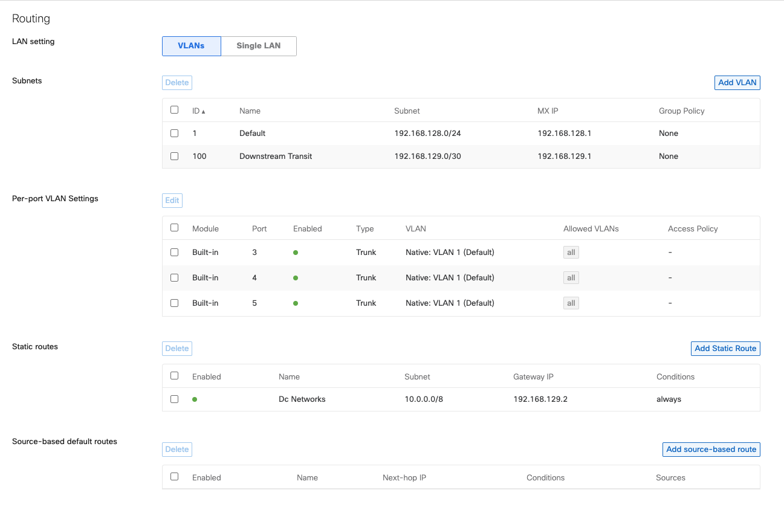
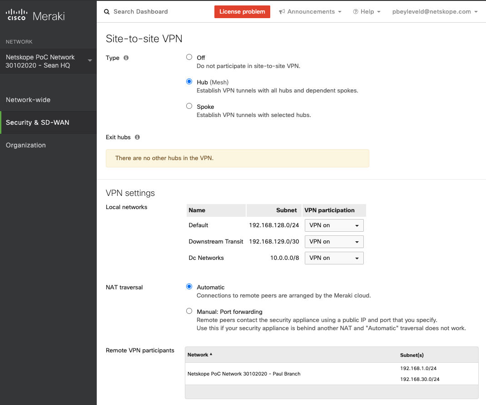
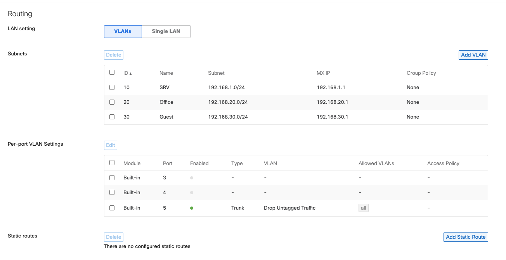
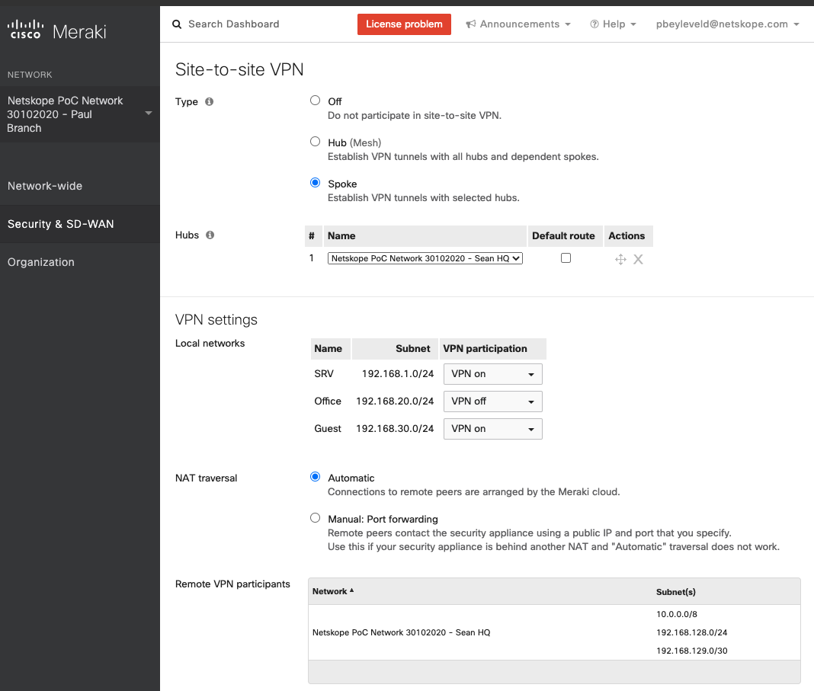
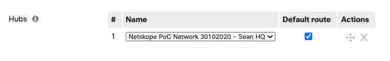
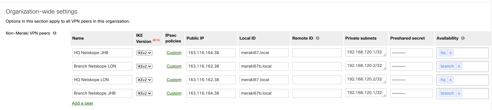
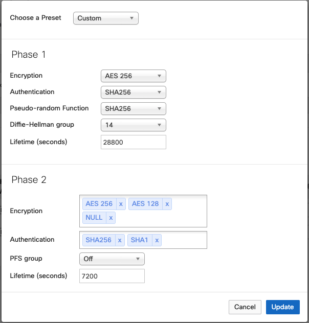

Netskope IPSec with Cisco Meraki
Netskope can be deployed in conjunction with the Meraki SD-WAN solution to effectively protect users regardless of their location roaming or network. While there are limitations to the Meraki policy-based steering capability, Netskope can steer traffic directly from a branch to the Netskope cloud, leveraging the third-party IPSec configuration. Availability is achieved using either the Netskope Client or multiple tunnels from each MX device and a PAC script for continuity during failure conditions. In addition, the outbound firewall policy can be used to limit direct access to only include the Netskope tenant, which enables the client to steer directly to the Netskope cloud. This ensures your cloud access risk is effectively controlled while offering your users the best possible experience and reducing the requirement to steer traffic to your organization's HQ to reduce costs related to backhauling cloud-bound traffic.
Cisco Meraki is a low-cost cloud-managed alternative to the traditional Cisco network equipment. The solution is popular because of its ease of deployment and management. Cisco markets it as a solution that offers SD-WAN capabilities through the Meraki Auto-VPN capabilities. This solution is aimed at small and medium organizations and doesn't offer the full features included with the traditional enterprise-focused solutions.
The goal of SD-WAN is to lower costs related to expensive MPLS and least line links through the adoption of low-cost internet-based links without impacting user experience negatively or introducing risks by not having the required mitigating controls in place.
Following are the components for this configuration:
2x Meraki MX67 deployed in geographically separate locations with separate internet connections
Cisco Meraki running version MX 15.39
Netskope tenant
Netskope Client
Both locations have Fiber internet connections, and the MX67 devices were configured with public IP address directly on WAN1 interface.
Meraki Site-to-Site (Auto) VPN was configured in a hub and spoke methodology to simulate a branch and head quarter deployment scenario. This document refers to the configured MX Hub (mesh) as the HQ or Site 1 and the Spoke as Branch or Site 2.
Both MX appliances are configured in routed mode, and Netskope established multiple IPSec tunnels from each MX device to the Netskope cloud. In most cases, Netskope recommends deploying VPN concentration mode for the hub. This won't affect the branch side configuration and general capability of the Meraki solution as it relates to traffic steering regarding SD-WAN.
The MX appliances support up to two WAN uplink interfaces and also a 3G/LTE failover using the supported USB dongle. This allows for load balancing and performance routing and redundancy of desired traffic using a preferred uplink. This configuration example uses a single uplink, but you can use multiple uplinks for increased redundancy.
Note
The Meraki SD-WAN solution doesn't offer the capability of creating policy-based routes to steer/route traffic based on destination port via a specific WAN or third-party IPSec interface.
Cisco Meraki & Netskope IPSec Tunnel Network
The following diagram outlines this configuration and defined use cases:
Site 1 (HQ)
Local Networks:
Default local network 192.168.128.0/24 – Published to Auto-VPN
Downstream Transit 192.168.129.0/30
Static Routes: DC Networks 10.0.0.0/8 – published to Auto-VPN
Site-to-site-VPN:
Hub (mesh)
Third-party IPSec
Netskope JHB
Netskope LON

Site 2 (Branch)
Local Networks:
SRV 192.168.1.0/24 – published to Auto-VPN
Office 192.168.20.0/24 – published to Auto-VPN
Guest 192.168.30.0/244 – published to Auto-VPN
Site-to-site-VPN:
Spoke
Third-party IPSec
Netskope JHB
Netskope LON
In Hubs, the Default route option is unselected, which is required for local direct internet breakout (i.e., use case #1). For central breakout (i.e., use case #2), this option must be selected:

Meraki Third-Party VPN Peers
Netskope configured an organization wide setting destined to two separate Netskope POPs applied to each of the Meraki MX devices. This configuration will create two IPSec tunnels from each of the MX appliances in the organization to both Netskope gateways. Each MX will then have the exact same connected IP address to each of the Netskope POPs.
|  |
The Private subnets setting is the locally addressable IP addresses to the Netskope cloud. These addresses can be anything just ensure they don't overlap with anything else. You can then either use policy-based routing or this subnet/IP as an explicit proxy destination in order to route traffic via Netskope.
Unfortunately, since the MXs can't perform policy-based routing across a target interface, Netskope can't make use of routing. However Netskope can use explicit proxy and PAC/wpad. In this configuration example, Netskope uses an explicit proxy with PAC/wpad deployment to support high availability and steering requirements.
Meraki IPSec Policies
To configure the IPSec policies in Cisco Meraki:
Select IKEv2. You must have version 15 to use IKEv2. Some MX devices don't support IKEv2.
In the Phase 1 section:
Encryption: AES 256
Authentication: SHA256
Psuedo-random Function: SHA256
Diffie-Helman Group: 14
Lifetime: 28800
In the Phase 2 section:
Encryption: AES 256, AES 128, NULL
Authentication: SHA256, SHA1
PFS group: Off
Lifetime: 7200
|  |
Note
You must configure at least one IPSec tunnel for every device connecting to the Netskope cloud.
To configure the the IPSec tunnel in Netskope:
Source IP Address: Leave blank. In this configuration example, Netskope uses WAN interfaces with dynamically assigned public IP addresses.
Source Identity: meraki67.local and meraki67b.local
Encryption Cipher: AES256-CBC
Netskope identified two feasible use cases. The aim is to secure user cloud access through the Netskope cloud while improving user experience, service availability, and lower costs. The Netskope cloud offers numerous steering options, but the following options are useful with regard to the Meraki SD-Wan solution, Netskope Client, and IPSec and Explicit Cloud Proxy.
Use Case #1: Direct internet breakout from the branch with Auto-VPN to a central location for access to private apps in a central location.
Use Case #2: Default route to VPN Hub and local internet breakout using Netskope proxy via third-party IPSec configuration on branch Meraki.
Use Case #1
In this configuration, the branch appliance’s default route points directly to the internet. Services in the HQ data center are published via Meraki Site-to-site VPN, and the branches will automatically route any traffic destined there via the Meraki Site-to-Site VPN. In addition, any other service that needs to be routed centrally must be defined centrally via the hub with either OSPF or a static route.
The Meraki solution allows configuring a firewall for outbound traffic, and you can use this solution to restrict outbound traffic. In this use case, Netskope chose to restrict outbound access to only the Netskope cloud infrastructure. The benefit of this approach is that Netskope can use the Netskope Client to route traffic directly to the Netskope cloud without any dependency on the IPSec tunnel and PAC/proxy configuration if the client is installed. This approach offers great user experience for devices managed by your organization but also allows any other devices that can't use the Netskope Client to route traffic directly over the IPSec tunnel. This configuration applies to non-user devices requiring internet access for specific services, such as guests or contractors. It allows direct breakout using the Netskope Explicit Proxy.
Use Case #2
If you configure the branch to route all traffic via the hub, all traffic will be routed via the Meraki Site-to-Site (Auto) VPN. If you have the Netskope Client deployed, any traffic from the client destined to the Netskope cloud is automatically routed to the central location. Netskope is unable to create policy-based routes to intelligently steer traffic based on the destination network so this is solved in a different way.
You can configure local internet breakout for traffic based on the destination IP address. You then can configure the MX device to perform local internet breakout for any traffic destined to the Netskope NewEdge infrastructure.
Following is the consolidated Netskope IP list for whitelisting:
CIDR Notation | IP Address Range |
|---|---|
8.36.116.0/24 | 8.36.116.0 - 8.36.116.255 |
8.39.144.0/24 | 8.39.144.0 - 8.39.144.255 |
31.186.239.0/24 | 31.186.239.0 - 31.186.239.255 |
45.250.160.0/22 | 45.250.160.0 - 45.250.163.255 |
74.217.93.0/24 | 74.217.93.0 - 74.217.93.255 |
103.47.244.0/24 | 103.47.244.0 - 103.47.244.255 |
103.219.77.0/24 | 103.219.77.0 - 103.219.77.255 |
103.219.78.0/24 | 103.219.78.0 - 103.219.78.255 |
103.219.79.0/24 | 103.219.79.0 - 103.219.79.255 |
163.116.128.0/17 | 163.116.128.0 - 163.116.255.255 |
You can configure this list in the VPN exclusion rules setting on the SD-WAN & traffic shaping page. This configuration allows all traffic to be routed centrally except for any Netskope-destined traffic, which will break out locally.
This setting allows the Netskope Client to directly break out and work as normal. If you want to use IPSec tunnels, the Netskope Client can automatically detect whether your traffic is steered via IPSec and disable itself. You can still get the benefits of the Netskope Client from a user notification and identity perspective.
If you want to use IPSec tunnels for localized steering or for situations where using the Netskope Client isn't possible and localized steering is dependent on the Explicit Proxy configuration, you can use PAC/wpad, which also enables seamless failover in an event that the primary Netskope POP is offline.
PAC files are flexible and, with wpad, allows devices to automatically detect proxy setting on a network. Following is the PAC file used in this configuration example:
// Pac file created by Miku ( miku@example.com )
// Last modified: 06/11/2020
// ver: 1.0
// status: beta
function FindProxyForURL(url, host) {
/* Only proxy HTTP and HTTPS */
if (!shExpMatch(url, "https://*") && !shExpMatch(url, "http://*")) return "DIRECT";
/* Normalize the URL for pattern matching */
url = url.toLowerCase();
host = host.toLowerCase();
/* resolve any host which can be resolved */
/* this is also useful for endpoint attribution of threats later using dns logs */
if (isResolvable(host)) {
var hostIP = dnsResolve(host);
}
// Hosts resolved to RFC 1918 goes direct.
if (isInNet(hostIP, "10.0.0.0", "255.0.0.0") ||
isInNet(hostIP, "172.16.0.0", "255.240.0.0") ||
isInNet(hostIP, "192.168.0.0", "255.255.0.0")) { return "DIRECT"; }
/* Don't proxy local hostnames */
if (isPlainHostName(host)) {
return 'DIRECT';
}
/* Don't proxy local domains */
if (dnsDomainIs(host, ".axefield.co.za") || (host == ".local")) {
return 'DIRECT';
}
/* Don't proxy hosts */
var ExcludeList = [
"*.sub7even.co.za"
];
for (var i=0; i<ExcludeList.length; i++) {
if (shExpMatch(host, ExcludeList[i])) return "DIRECT" ;
}
/* Explicit proxy ports, non-standard ports can be added here */
var PortList = [
"80",
"443"
];
for (var i=0; i<PortList.length; i++) {
if (shExpMatch(url, "*://*:*/") &&
!shExpMatch(url, "*://*:" + PortList[i] + "/")) {
//alert("Non standard port!");
return "DIRECT" ;
}
}
/* Return proxy */
var proxy = "PROXY 192.168.120.1:8080; PROXY 192.168.120.2:8080; DIRECT"
//alert(proxy);
return proxy;This PAC file enables you to steer traffic directly from the HQ or branch MX to the primary Netskope IPSec tunnel using proxy 192.168.120.1:8080 (JHB) and failover using proxy 192.168.120.2:8080 (LON). In this configuration example, a browser fails over to the backup proxy setting in less than 40 seconds if the primary proxy is no longer available.
Clients can automatically detect proxy configuration by deploying using DHCP option 252 and hosting the wpad.dat file on a web server that resolves to wpad with the following URL: http://wpad/wpad.dat
Netskope configured DHCP and hosted the wpad file on a web server, which resolved to wpad from local DNS. This enables clients on the network to automatically detect the proxy on the network.
The following image indicates the DHCP configuration pointing to the PAC.
For managed devices, Netskope recommends using the Netskope Client as it offers the most seamless configuration. You can use PAC files for non-managed devices or hosts where installing the Netskope Client isn't possible or preferred.